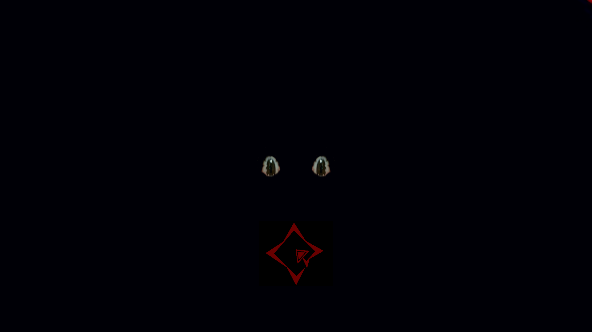

소개
이 게임은 웨루 게임잼 2R 제출작입니다.
지금 보면 단순한 로직밖에 없었지만, 그때는 정말 그 단순한 로직도 어려워서 밤을 새우고도 저녁 7시쯤 되어서야 잔 것이 기억나네요.
2R는 남은 참가자끼리 서로 지목하여 같은 주제를 두고 대결하는 방식이었습니다.
저는 노 텍스트라는 주제를 받았습니다. 저와 대결한 분이 훌륭한 작품을 만드셔서 패배했지만, 다행히 소수점 차이로 패자부활전으로 3R에 진출할 수 있었습니다.
여담이지만, 게임 제목인 Be Not Afraid...는 오컬트 분위기에 맞는 음성을 찾다가 Be Not Afraid...만 반복되는 음성 팩을 발견해 그대로 제목으로 사용했습니다.
또 한 가지, 당시에는 제공된 에셋 외에는 스프라이트 한 장도 가져오면 안 된다고 잘못 생각해 제 눈과 팔을 포토샵으로 합성해 강림하는 괴이한 것의 형체를 만들었습니다....

초기 기획
이번 주제는 1R과 다르게 너무나도 많은 아이디어가 떠올라서 문제였습니다.
노 텍스트… 즉 텍스트 없이 진행되는 게임이라면, 플레이어가 빠르게 규칙을 이해하고 몰입할 수 있는 형태가 적합하다고 생각했습니다.
그러던 중 이 에셋을 발견하게 되었습니다.
아트 실력이 없는 개발자는 에셋의 분위기에 맞는 게임을 만들어야 하는 법... 그래서 저는 이 에셋을 활용해 오컬트 콘셉트를 잡고, 마을 곳곳에 펼쳐진 마법진을 플레이어가 직접 해주하는 게임을 만들기로 했습니다.
여기에 빠르게 규칙을 파악하지 못하여도 진행할 수 있도록 타임 루프 요소도 넣으려 했습니다.
기획 중 실패한 부분
타임 루프 콘셉트에서 중요한 부분을 간과했습니다.
타임 루프는 '시간이 반복되고 있다'는 인지가 필요하다
게임이 완성된 후 보니, 타임 루프라기보다는 대부분의 게임에 있던 RETRY 버튼과 크게 다르지 않은 흐름이 되어버렸습니다.
플레이어(주인공)가 "이번엔 이렇게 해보자" 같은 힌트 문장이라도 말해줬다면 루프가 성립되겠지만, 제 주제는 노 텍스트였습니다.
개발 중 있었던 문제들
개발 자체의 문제는 거의 없었지만, 아직 미숙한 코딩 실력 때문에 시간이 매우 오래 걸렸습니다.
결국 밤을 새웠어도 제출 마감 2시간 전에서야 완성할 수 있었습니다.
빌드 완성 후 발견한 문제들
1. 초반 플레이어 유도 실패
제 게임에서는 왼쪽 맵 끝에 있는 NPC에게서 열쇠를 훔쳐야 본격적인 진행이 가능합니다.
그러나 플레이어의 시작 위치가 중앙이 아닌 오른쪽에 배치되어 있어, 초반 진행까지의 시간이 불필요하게 길어지는 문제가 있었습니다.
느낀 점
앞선 두 작품에 비해 확실한 엔딩을 만들어서 꽤 만족스러웠습니다.
다만 이때 개발 과정이 워낙 고됐던 탓인지, 제 게임에 쓰인 BGM을 다른 게임에서 들었는데 1년이 지났음에도 어지럽더군요.